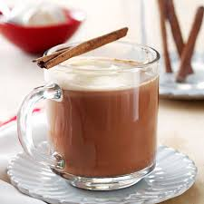

Cinnamon Mocha Coffee
Perp-Time: 5minutes
Yield: One large, or two small smoothies
Diet: White chocolate, brown sugar, low fat,
Ingredients
- cups low-fat milk
- cinnamon sticks
- ounces white chocolate, broken into pieces/li>
- ounces bittersweet chocolate, broken into pieces)
For Finishing
Garnish with ground cinnamon or chocolate shavings (optional).
Directions:
In a coffeemaker basket - using a filter - combine the coffee grounds and ground cinnamon. Prepare 4 cups of coffee as directed on your coffee maker directions.